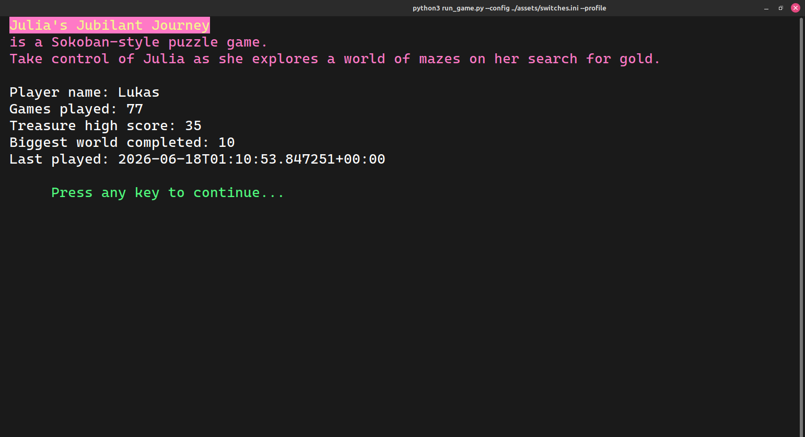
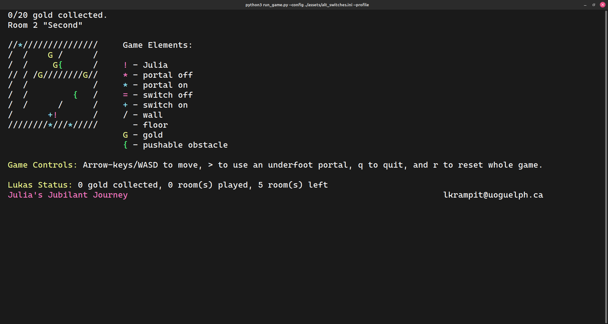

Story of got lamps from Oma K.
First one broke Feb 2025. Second same thing an indeterminate amount of time later.
Back around August 2025 in the span of a couple of weeks both my touch lamps had a bright flash and then went out. It just looked like the
incandescent filament burnt out but when I replaced the bulb and plugged the lamp back in it turned on immediately and nothing happened
anymore when I touched it. This means they were on full brightness all the time with no way to turn them off. The lamps behaved like this
both with incandescent bulbs and dimmable LEDs. Naturally, the short term solution was to put the two lamps on a switched power-bar so
I didn't need to unplug them all the time.
The long term solution took me until December had never done electrical work before. Now it's no big deal and I am now able to put together
industrial combined panels for 3-phase 400V.


Sourcing the parts.
The repair


